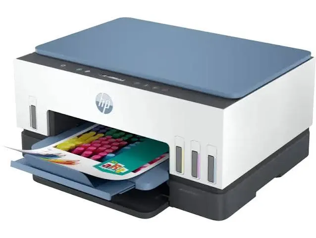
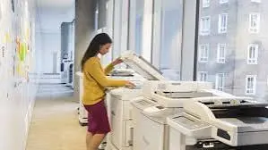
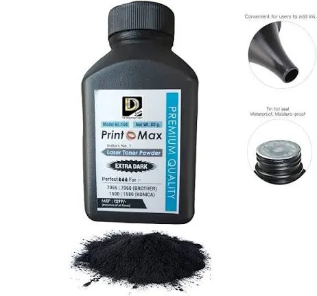
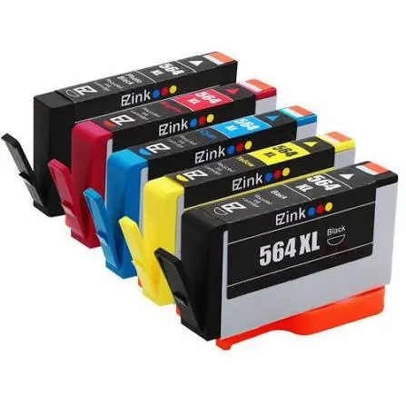

Printers
Inkjet vs Laser Printer: Which Is Right for You?
Compare inkjet and laser printers by print quality, speed, running costs, maintenance and use case to choose the right printer for home or office.
Introduction
When looking to choose a printer there are quite a few things to consider such as technology type, cartridges, print speed and cost. Inkjet and laser are the two most common types available. However, whilst they can both produce useful documents they both work in different ways.
An inkjet printer works by using very small drops of liquid ink to create an image on the paper. Laser printers work by using electro-photographic technology. This means the laser/LED creates an image on a photosensitive drum. Toner powder is then transferred to the paper and bonded using heat. This will affect the quality, speed, servicing and cost.
There is no one right choice, it really depends on what you want to print, how often you want to print, whether you need colour and how much you want to spend.
Inkjet Printers
Inkjet printers use either ink cartridges or ink tanks to print. The printhead sprays very small amounts of ink onto the paper. Many printers have separate black and colour cartridge’s. Others may have refillable ink tanks. Inkjet technology is very versatile and is a popular choice for printing at home, school projects, pictures and colour documents.
A benefit of using an inkjet printer is that they can produce clear, colourful images with smooth shading. They are also available in compact sizes at an affordable price. Some have the added bonus of having scanning and copying facilities.
However, as ink is liquid it can dry out around the printhead if you leave them unused for long periods. Cleaning cycles can use up ink. On some models they can be quite expensive to replace the cartridges. Paper can also be an issue as some may not absorb the ink as well as special photo paper.

Laser Printers
Laser printers use toner (a fine powder) instead of liquid ink. An image is created on a drum and the toner is attracted to the correct areas. It is then transferred to the paper and fixed using heat to create a finished document. This means they can produce documents quickly.
They are a great choice for offices, schools and homes that print large amounts of text. They often print in black and white quickly. If you don’t need high quality images and are looking for predictable document printing they can be a good choice. As toner is not liquid it won’t dry out like ink can be.
Laser printers can be more expensive to purchase especially if you want colour. They can also be larger and heavier than entry level inkjet printers. Whilst colour laser printing can be great for many charts, presentations and documents, if you want high quality images for photos an inkjet specifically for photos may be a better choice.

Quality of print - Documents, Graphics & Photographs
Both inkjet and laser printers can be a good choice if you’re printing normal documents such as letters, invoices, assignments and reports. A good quality laser printer can often produce very clear black text. Inkjet printers can also produce clear documents if the printhead and paper settings are in good condition.
When printing photos inkjet printers tend to be more versatile. They are often a preferred choice for those wanting vibrant colours, shading and detailed images. How well they print will depend on the resolution, ink, paper and colour settings. Not all inkjet printers will be photo printers so make sure to look at sample prints and specifications.
For business graphics it will depend on what you want to print. Laser printers can be a good choice for charts, forms and coloured reports. Inkjet printers can also be a good choice for posters, images and mixed media depending on the model. If you need accurate colour make sure to check what media is supported, colour system and profiles.
Print Speed & Volume
Laser printers are often a good choice for large volumes of text. Many business models are designed to handle high volumes of work with relatively high print speeds. Inkjet printers can vary greatly. Entry level printers may be slower. However some business models can be designed to print documents quickly.
Don’t just look at the print speed. Depending on the mode (draft, standard or high quality) the printer may have different print speeds. The first page may also take longer to print. Look for printers with a recommended monthly print volume. This will give you a better idea of how they will perform in regular use.
If you don’t print a lot of pages a month you may not need a high volume printer. For example if you’re a family printing occasional forms and school assignments. If you’re a small office printing invoices, reports and customer documents daily make sure to look at how many sheets of paper can be held, duplex printing, network connection and cost of consumables.
Cost - Cartridges/Toner
When looking at the cost of a printer you need to consider how much it will cost to replace the ink/toner, drum (if applicable), servicing parts, paper and electricity. The number of pages printed using the cartridge/toner is usually calculated using standardised testing. This can vary depending on how much of the page is covered, mode, type of documents being printed and how they are used. Ink tank printers may be a good choice if you print a lot. They can be more expensive to purchase but the cost per page can be lower. Ink cartridge printers can be affordable to purchase but may be more expensive to run if the cartridges are expensive or have a low page yield. Laser printers can have a higher page yield for text based documents. However make sure to check if the toner cartridge includes the drum or if it is a separate item.
Make sure to look at how much genuine and approved consumables will cost for that exact model. If you go for a cheap printer but the consumables are expensive or hard to find it can get expensive. Work out roughly how much they will cost per month depending on how many pages you expect to print.


Servicing
Inkjet printers may need servicing such as cleaning the printhead. If you don’t use them for long periods of time follow the manufacturers guidelines on turning on, servicing and storing the cartridges. Don’t keep running the cleaning function if the output isn’t great as this will waste ink.
Laser printers won’t have liquid ink to dry out however they will still need servicing. Toner cartridges, drums, rollers and fuser all have a service life. Using dusty paper, incorrect paper and heavy use can cause issues with feeding paper through and quality of the print. Both should be stored in a clean and dry place. Use the correct paper and consumables.
Depending on the model, amount of use, environment and servicing the reliability can vary. Make sure to look at the warranty, local servicing and cost of replacement parts.
Which Printer?
If you regularly print colour photos, creative documents or mixed documents an inkjet printer would be a good choice. If you have a household or small business that prints a lot of colour an ink tank model may be a good choice. If you don’t print often and want something affordable an ink cartridge may be enough.
If you mainly print text, print a lot, want fast printing or want something that can sit unused for a while without the liquid ink drying out a laser printer would be a good choice. If you’re an office that rarely need colour a mono laser printer can be a good choice. If you’re an office that prints charts, brochures and presentations a colour laser may be a good choice. Make sure to check how well the colour prints and cost of consumables. Before purchasing make sure to look at what connections it has, automatic duplex printing, how many sheets of paper it can hold, print speed, scanning capabilities, what operating systems it works with, size and warranty. If you have more than one person using it make sure it has network/Wi-Fi.
Conclusion
Both inkjet and laser printers have different purposes. Inkjet printers often have an appealing factor for photos and versatile colour printing. Laser printers often are a great choice for quick, regular document printing. The best choice will depend on what you actually need the printer for and the overall cost.
Make a list of what you need to print, how many pages you print a month and if you need colour, scanning and duplex printing. Compare different models and consumables. Printerworld can help customers find the right printer for their needs and what servicing they may need. Make sure the model you choose is available, consumables are compatible and what servicing is offered.
Need a hand with your printer or laptop?
Printerworld sells printers, laptops and genuine supplies, and repairs and services both. Bring in your model number and we will help you get it right.